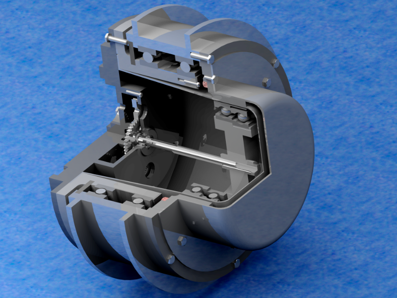
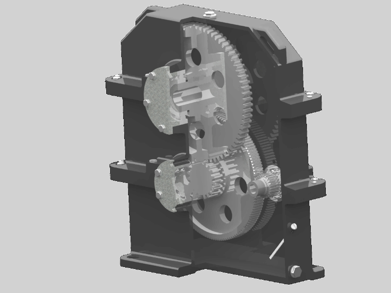

Reducers
There are some different reducers were design from requirements to final model and drafts, ready to manufacture
Wave reducer
Design of construction of double-stage reducer hight reliability and wear resistance under non-stationary in an unfavorable environment.
The drive gear on the input shafts are two electric motors of 2 kW each one. General characteristics of reducer are:
- Power of electro motors is 4 kW
- Resource of reducer is 1000 hours
- Weight = 26 kg
- Frequency of input shaft rotation on 15 000 rpm
- Frequency of output shaft rotation on 62.5 rpm
- Torque of input shaft (one) is 0.6365 N·m
- Torque of output shaft (rim) is 578 N·m
- General ratio of all gear is 240
Selection of isometric view looks like:

On a scheme below are basics construction elements of the reducer:
Where: 1-Electro motors, 2-Input shaft, 3-Flexible gear, 4-Igniter, 5,13-o-rings, 6-Eccentric wave generator, 7-Driving gear, 8-Gear, 9,10,14-Caps, 11-Rotation cap, 12-Wheel rim, 15-Hard gear, 16-Sleeve, 17-Strip, 18,19,20-Bearings, 21-24-Bolts,
25, 26,27-Washers, 28-Screw
Satellite reducer
This is a satellite type reducer. For short, control shaft turn three gears called satellites (because of their rotation motion around contor shaft and their self axis), and then they are turning a part call carrier (or driver) which is output shaft.

And this image shows a corpus draft. Is has not the simplest structure.

Also, there is a video on YouTube available. It does not make any sense and explain nothing, but shows assembling with a funny background music.
Simple three-stage reducer
Design of a simple 3-stage cylindrical reducer for transporter equipment.

Reducer technical characteristics:
- Power of electro engine = 1,3 kW
- Resource = 4 000 hours
- Weight = 32 kg
- Rotation Frequency of control shaft = 4000 rot/min
- Rotation Frequency of output shaft = 500 rot/min
- Torque of control shaft = 12,3 N·m
- Torque of output shaft (обода) = 113,4 N·m
- Reduction ratio = 8
Where :
1-Corpus base, 2-Corpus, 3-Corpus cup, 4-Oil indicator, 5 -Control pinion shaft, 6-Middle (transmissive) pinion shaft, 7-Output pinion shaft, 8,9-Gears, 10-14 -Bearing cups, 15-17-Adjusting compressions, 18-20-Shaft cups compressions, 21,22-Screw М12х8, 23-Window, 24 -Window finger.
Standard parts: 23-Cup-type seal 1-8х55-3, 24-Bolt М8х25 (S16), 25-Bolt М8х40 (S16), 26,27,28-Bearings 203, 206, 209, 29-Cotter 14х8х44, 30-Spacer 8_3х13